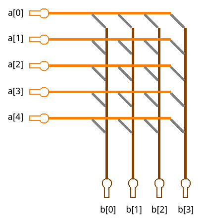
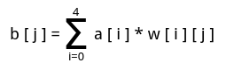
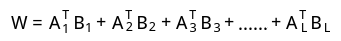
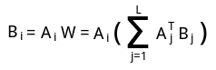
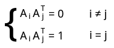
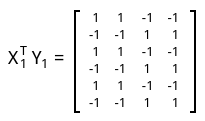
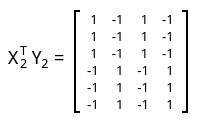
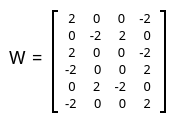

最近在研究《神经网络及其应用》一书，被里面的各种想法所吸引。第一个吸引我的就是双向联系存储器（Bidirectional Associative Memory，即BAM）。
=====================阶段一：基本原理=====================
人脑有一个特征就是，可以通过一个不完整或者有少量错误的信息中回想起一个完整的、正确的信息。比如听到一段旋律就能想到歌词，或是看到一个错别字但依旧能够理解句子意思。这种能力就称作联想能力。
联系存储器（Associative Memory，即AM）是指一类专门用来模拟联系记忆的神经网络。其结构如图所示：

假设该AM的输入维度为5，输出维度为4。当向AM输入一个5维行向量A(a[0],a[1],a[2],a[3],a[4])时，AM就会输出一个4维列向量B(b[0],b[1],b[2],b[3])，并有：
b[0]=a[0]*w[0][0]+a[1]*w[1][0]+a[2]*w[2][0]+a[3]*w[3][0]+a[4]*w[4][0]，
b[1]=a[0]*w[0][1]+a[1]*w[1][1]+a[2]*w[2][1]+a[3]*w[3][1]+a[4]*w[4][1]，
b[2]=a[0]*w[0][2]+a[1]*w[1][2]+a[2]*w[2][2]+a[3]*w[3][2]+a[4]*w[4][2]，
b[3]=a[0]*w[0][3]+a[1]*w[1][3]+a[2]*w[2][3]+a[3]*w[3][3]+a[4]*w[4][3]，
或者简写为：

其中w[i][j]就是图中灰色部分的连接的权值。
因此，一个AM网络可以表示成一个n行m列的矩阵W，输入一个n维向量A，输出一个m维向量B，其中有：
A*W=B。
====================阶段二：学习法则=================
AM中的权值矩阵是如何确定的呢？一开始，权值矩阵W=0，即所有权重都为0。
假设要记忆L对向量(A1,B1)、(A2,B2)、(A3,B3)…(AL,BL)，那么W就变为：

如果要通过Ai从AM中回忆出Bi，那么就执行乘法运算：

如果L个Ai均是正交的，即

那么乘法运算的结果就是Bi。
通常我们的输入不会保证正交。如果输入不正交，那么输出就会产生误差，或者称作“串音”。输入Ai之间的相关度越大，串音就越严重。
===================阶段三：消除串音与噪音====================
在阶段二中已经得知，由于输入之间不正交，输出就会产生串音。事实上，实际应用中，输入的总是被噪音污染了的或发生了相当程度的畸变的Ai。于是，如何消除串音与噪音成了AM的重要课题。
该课题的突破口就是将联想存储器AM进化成双向联想存储区BAM。BAM操作的基本流程为：
（1）向BAM输入被噪声污染或者发生了相当程度的畸变的Ai‘；
（2）通过乘法Ai’W产生了一个有一定噪声与串音的Bi’；
（3）把Bi’重新代入W中，通过乘法Bi’WT，产生Ai”；
（4）把Ai”重新带入W中，通过乘法Ai”W，产生Bi”；
（5）把Bi”重新带入W中，通过乘法Bi”WT，产生Ai‘’‘；
……如此不断迭代，直到输出不再变化为止，取此时的输出为Af与Bf。
通常，Af与Bf即为本来存入的完整、正确的信息，或者是足够接近原本存入的信息。
BAM奏效的基本假设是，噪音与串音所占的成分不是太大，于是，每次迭代，杂音的部分就逐渐收敛，信噪比越来越高，最终正向与反向信息流稳定下来，或按一个固定的数据对谐振。具体的理论证明可以查看Grossberg的自适应谐振理论《A massively parallel Architecture for a Self-organizing Neural Pattern Recognition Machine》。
======================阶段四：实际使用======================
BAM用的最多的就是对二进制向量的记忆与取出。如果直接输入二进制向量Ai与Bi，那么权值矩阵按照AM的学习规则：

于是，W中不可能存在负值的权重。这违反了Hebb学习规则中既有兴奋性连接又要有抑制性连接的要求。
解决此矛盾的办法是将二进制向量变换成双极向量，即用-1替代原理的0，比如向量二进制向量(0 0 1 0 1 1 0 1)要变成(-1 -1 1 -1 1 1 -1 1)，这样就与Hebb学习规则一致了。
下面举例说明BAM的编码和译码过程。
假设一个BAM的输入维度是6，输出维度是4，现有两个联想对(A1,B1)、(A2,B2)：
A1=(1 0 1 0 1 0)，B1=(1 1 0 0)
A2=(1 1 1 0 0 0)，B2=(1 0 1 0)
先将它们转换成双极对：
X1=(1 -1 1 -1 1 -1)，Y1=(1 1 -1 -1)
X2=(1 1 1 -1 -1 -1)，Y2=(1 -1 1 -1)
再将这两个双极向量对转换成两个双极关联矩阵：


然后把这两个矩阵相加得到BAM的权值矩阵W：

至此，BAM学习结束。
此时如果输入A1=(1 0 1 0 1 0)，执行乘法A1W=(4 2 -2 -4)，应用阈值规则，结果为(1 1 0 0)，也就是B1。
如果输入带有杂音的A=(0 1 1 0 0 0)，即A2被扰乱了1位后的结果，则运算结果为(2 -2 2 -2)，应用阈值规则，结果为(1 0 1 0)，即B2。这说明BAM有一定的容错能力。
当然，这里是举的简单的例子，当BAM包含的神经元数据较多并且记忆的联系对也较多时，一个噪声模式输入后，要经过多次迭代，才能达到稳定，正确回忆出某个联想对来，或得到的输出最接近与希望回忆出来的联想对。